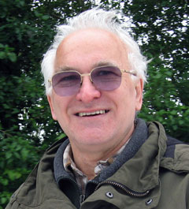

Martin
Chaplin BSc PhD CChem FRSC

Visiting Professor of Applied Science
London South Bank University
martin.chaplin@btinternet.com
I graduated in Chemistry from the University of Birmingham in
1967. Over the following three years, I completed a Ph.D. concerned
with the structural and biological studies on the glycans in human
follicle-stimulating hormone, in collaboration with the University
of Birmingham and the Birmingham and Midland Hospital for Women.
After two years teaching chemistry at Bunda College of Agriculture
at the University of Malawi, East Africa, I returned to the University
of Birmingham as a Faculty Research Fellow to continue my work on
the glycoprotein hormones and to start some enzyme technology research.
My interest in these research areas continued within a lecturing
position at the Biochemistry Department of the University of Leeds
and during a four-year seconded post at the University of Ghana,
West Africa. Since 1985 I have been at London South Bank University,
where I am currently an Emeritus Professor and Visiting Professor of Applied Science. I have successfully mentored 25 Ph.D. students. My current interests lie mainly with aqueous systems, particularly with interactions between biomaterials in water. I have experience as an expert witness in Patent litigation.
Publications
- Chaplin, M. F., (2019) Structure and properties of water in its various states, Encyclopedia of Water: Science, Technology, and Society, Ed. P. A. Maurice, Wiley, DOI: 10.1002/9781119300762.wsts0002 [Abstract]
- Chaplin, M. F., (2015) Biosensors,
In Molecular Biology and Biotechnology, 6th Ed. R. Rapley and D. Whitehouse, (Ed.) Royal Society of Chemistry,
Cambridge, pp. 225-256.
- Chaplin, M. F., (2014) Interfacial osmotic pressure, Aqua Incognita: why ice floats on water and Galileo 400 years on, Ed. P. Lo Nostro and B. Ninham, ISBN: 9781925138214 (Connor Court, Ballarat), pp 329-340. [Abstract]
- Chaplin, M. F., (2013) What is liquid water, Science in Society, 58 (2013) 41-45. [Abstract]
- Chaplin. M., (2012) Self-generation of colligative properties at hydrophilic surfaces, arxiv.org:1203.0206 [cond-mat.soft] [Abstract]
- Chaplin. M., (2011) The water molecule, liquid water, hydrogen bonds and water networks, In Water The forgotten biological molecule, D. Le Bihan and H. Fukuyama, Ed. Pan Stanford Publishing Pte. Ltd., Singapore, pp. 3-19.
- Chaplin, M. F., (2010) Structuring and behaviour of water in nanochannels and confined spaces, In Adsorption and Phase Behaviour in Nanochannels and Nanotubes, L. Dunne and G. Manos, Ed. Springer, Dordrecht, pp. 241-255.
- Chaplin, M., (2009) Theory vs experiment: What is the surface charge of water? Water, 1 1-28 [Abstract]
- Chaplin, M. F., (2009) Biosensors,
In Molecular Biology and Biotechnology, 5th Ed. J.M.
Walker and R. Rapley, (Ed.) Royal Society of Chemistry,
Cambridge, pp. 513-547.
- Chaplin, M. F., (2008) Water in biological recognition processes, Wiley Encyclopedia of Chemical Biology, Ed. T. P. Begley (John Wiley & Sons) 1-8.
- Chaplin, M., (2007) The memory of water; an overview, Homeopathy, 96 (2007) 143-150 [Abstract]; Chaplin, M., Reply to Comment on "The memory of water; an overview", Homeopathy, 97 (2008) 43-44.
- Oleinikova, A., Weingärtner, H., Chaplin, M., Diemann, E., Bögge, H. and Müller, A., (2007) Self-association based on glue type interfacial/confined highly structured water leads to {Mo154}≈ 1165 super-clusters: A dielectric relaxation study,ChemPhysChem 8 646-649.
- Chaplin, M. F., (2006) Opinion: Do we underestimate the importance of water in cell biology? Nature, Reviews Molecular Cell Biology, 7 (11): 861-866.
[Abstract]
- Chaplin, M. F., (2006) Information exchange within intracellular water, In, Water and the Cell, Ed. G. H. Pollack, I. L. Cameron and D. N. Wheatley, Springer, pp. 113-123. [Abstract]
- Chaplin, M. F., (2006) Water structuring at colloidal surfaces, In. Surface Chemistry in Biomedical and environmental Science, Ed. J. Blitz and V. Gun’ko, NATO Security Through Science Series, Springer pp. 1-10. [Abstract]
- Chaplin, M. F., Water’s hydrogen bond strength, In: Water and Life, ed. R. M. Lynden-Bell, S. Conway Morris, J. D. Barrow, J. L. Finney and C. L. Harper, Jr. (CRC Press, Boca Raton, 2010) pp 69-86. arXiv:0706.1355 (2007). [Abstract]
- Hawkins M. L., Davies G. J., Chaplin M. F., Dillon, J. F., Cotton, J. P. and Dettmar, P. W., (2007) Comparison of dietary assessment methods within a population suffering from gastro-oesophageal reflux disease, Proceedings of the Nutrition
Society, 66, 67A-67A.
- Hawkins M. L., Davies G. J., Chaplin M. F., Dillon, J. F., Cotton, J. P. and Dettmar, P. W., (2007) Antioxidant vitamin intakes in the progression of gastro-oesophageal reflux disease, Proceedings of the Nutrition
Society, 66, 50A-50A.
- Chaplin, M. F., (2004) The structure of Plantago
ovata arabinoxylan, Gums and Stabilisers for
the Food Industry, P. A. Williams and G. O. Phillips
(Ed.), Royal Society of Chemistry, 12 509-516 (also cited as: Special Publication- Royal
Society of Chemistry 294 (2004) 509-516).
[Abstract]
- Chaplin, M. F., (2004) The
importance of cell water, Science in Society, 24, 42-45.
- Chaplin, M. F., (2004) Carbohydrate
Analysis. In Encyclopedia of Molecular Cell Biology
and Molecular Medicine, R. A. Meyers (Ed.) Wiley
-VCH, Weinheim, Vol. 2 pp. 243-275.
- Chaplin, M. F., (2003) Fibre and water
binding. Proceedings of the Nutrition Society, 62,
223-227. [Abstract]
- Edwards, S., Chaplin, M. F., Blackwood,
A. D. and Dettmar, P. W. (2003) Primary structure of arabinoxylans
of ispaghula husk and wheat bran, Proceedings of the Nutrition
Society, 62, 217-222. [Abstract]
- Chaplin, M. F., (2001) Water; its importance
to life. Biochemistry and Molecular Biology Education, 29 (2), 54-59. [Abstract]
- Chaplin, M. F., (2000) A proposal for
the structuring of water. Biophysical Chemistry, 83 (3), 211-221. [Abstract]
- Blackwood, A. D., Salter, J, Dettmar,
P. W. and Chaplin, M. F., (2000) Dietary fibre, physicochemical
properties and their relationship to health. Journal of the Royal
Society of Health, 120 (4), 242-247. [Abstract]
- Chaplin, M. F., Chaudhury, S., Dettmar,
P. W., Sykes, J., Shaw, A. D. and Davies, G. J., (2000)
Effect of ispaghula husk on the faecal output of bile
acids in healthy volunteers. Journal of Steroid Biochemistry and Molecular
Biology, 83 (5), 283-292. [Abstract]
- Manos, G., Dunne, L. J., Chaplin, M.
F. and Du, Z., (2001) Comparative study of Monte Carlo
simulations and exact statistical mechanical lattice model
of commensurate transitions of alkanes adsorbed in zeolites. Chemical Physics Letters, 335, 77-84.
[Abstract]
- Du, Z. M., Dunne, L. J., Manos, G. J.
N. and Chaplin, M. F., (2000) Exact statistical mechanical
treatment of benzene adsorption in a zeolite twin-pore
one-dimensional lattice model. Chemical Physics Letters, 318, 319-324. [Abstract]
- Chaplin, M. F., (2000) Carbohydrate
Analysis: Introduction. In Encyclopedia of Analytical
Chemistry, R. A. Meyers (Ed.) John Wiley & Sons
Ltd, Chichester, pp. 735-741.
- Chaplin, M. F., (2000) Biosensors,
In Molecular Biology and Biotechnology, 4th Ed. J.M.
Walker and R. Rapley, (Ed.) Royal Society of Chemistry,
Cambridge, pp. 521 - 554.
- Blackwood, A. D. and Chaplin, M. F.,
(2000) Disaccharide, Oligosaccharide and Polysaccharide
Analysis. In Encyclopedia of Analytical Chemistry,
R. A. Meyers (Ed.) John Wiley & Sons Ltd, Chichester,
pp. 741-765. [Abstract]
- Poltorak, O. M., Chukhrai, E. S., Kozlenkov,
A. A., Chaplin, M. F., and Trevan, M. D., (1999) The putative
common mechanism for inactivation of alkaline phosphatase
isoenzymes. Journal of Molecular Catalysis B-Enzymatic, 7 (1-4), 157-163. [Abstract]
- Poltorak, O. M., Chukhray, E. S., Torshin,
I. Y., Atyaksheva, L. F., Trevan, M. D., and Chaplin,
M. F., (1999) Catalytic properties, stability and the
structure of the conformational lock in the alkaline phosphatase
from Escherichia coli.Journal of Molecular Catalysis B-Enzymatic, 7 (1-4), 165-172. [Abstract]
- Du, Z. M., Dunne, L. J., Chaplin, M.
F. and Manos, G. J. N. (1999) Comparative study of mean-field
theory and Monte Carlo simulation of supercritical methane
adsorption in zeolites. Chemical Physics Letters, 307 (5-6), 413-418. [Abstract]
- Chaudhury, S. and Chaplin, M. F. (1999)
Determination of bile acids in human faecal samples using
supercritical fluid extraction and high-performance liquid
chromatography Journal of Chromatography B, 726 (1-2), 71-78. [Abstract]
- Chaplin, M. F. (1999) Structure-activity
relationships in complex carbohydrates. In; The right
fibre for the right disease, Ed. M. Hill. International Congress
Symposium Series, 256, Royal Society of Medicine
Press, 11-16. [Abstract]
- Foster, L. H., Chaplin, M. F. and Sumar,
S. (1998) The effect of heat treatment on intrinsic and
fortified selenium levels in cow's milk. Food Chemistry, 62 (1), 21-25. [Abstract]
- Chaplin, M. F., (1998) Bile acids,
fibre and colon cancer: the story unfolds. Journal of the Royal
Society of Health, 118 (1), 53-61. [Abstract]
 Earlier and Conference references
Earlier and Conference references